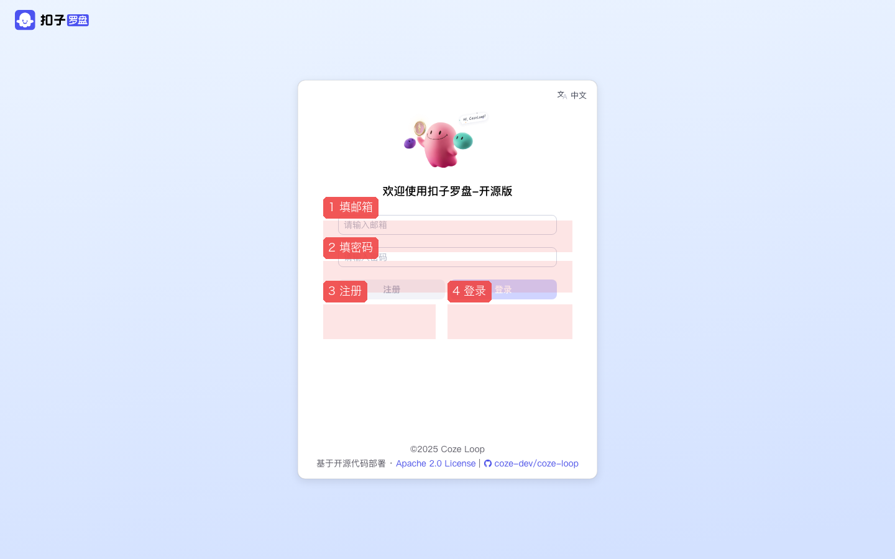
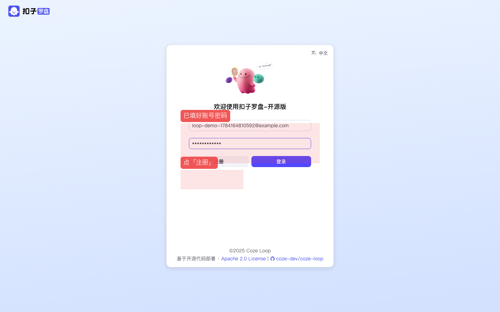
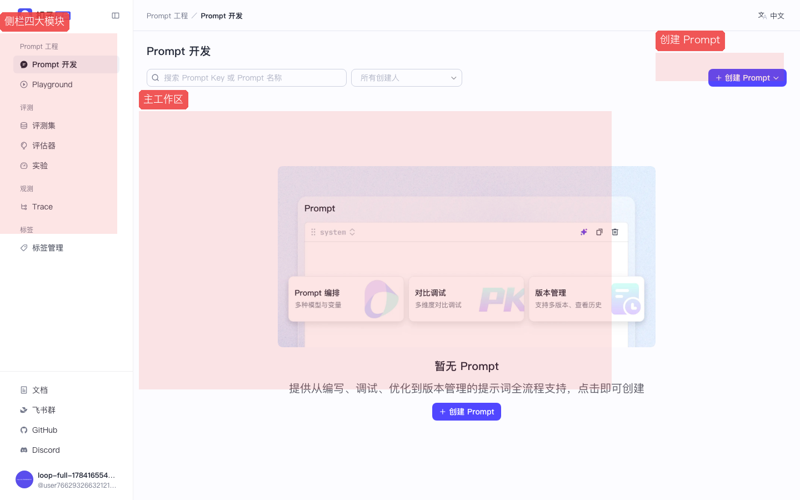
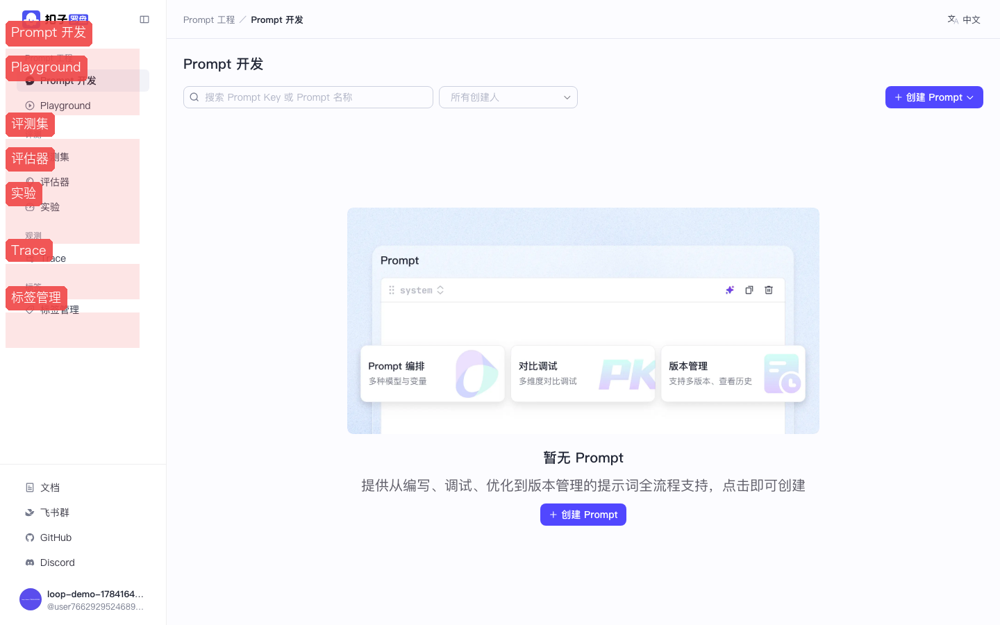
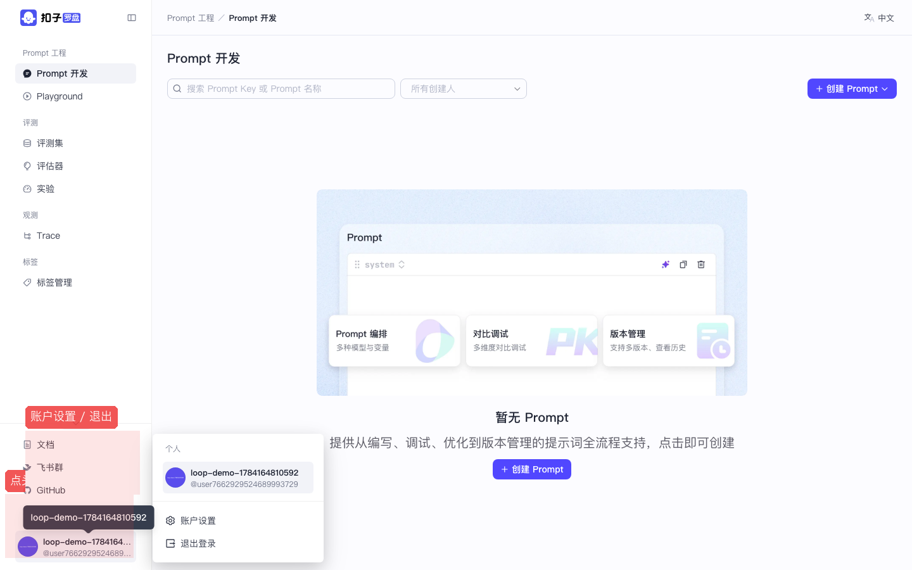
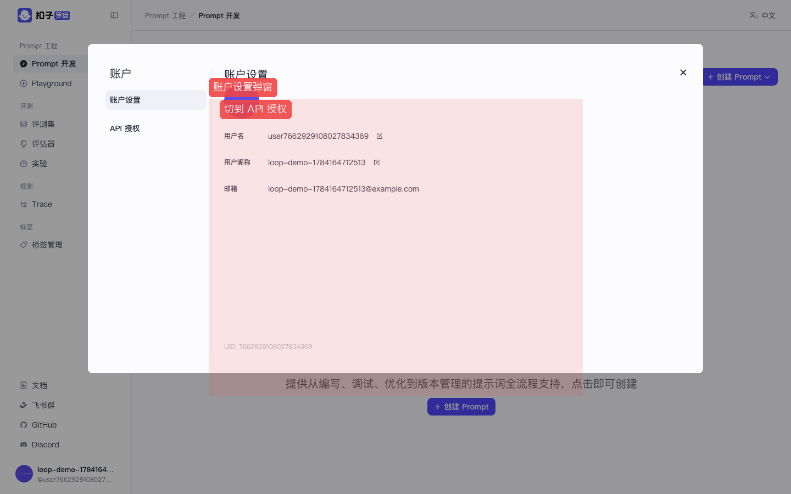

Coze Loop 开源实战 · P00 / 共 8 课 · ≈25 min · 跟做版
P00 · 环境启动 · 注册登录 · 侧栏导览
把本地服务跑起来、注册账号、认识侧栏。后面所有课都依赖本课。 截图红框为操作重点。上级：总目录。
图上的红色编号框标出你要点的位置。请按「文字步骤 → 对照截图」顺序做；做完看每步绿色验收。
0
前置条件（先核对再动手）
| 项 | 你需要准备什么 |
|---|---|
| 电脑 | 已安装 Docker Desktop，并处于 Running（菜单栏有鲸鱼图标） |
| 内存 | Docker 建议分配 ≥ 8～12GB（越小越容易中途挂掉） |
| 代码 | 已 clone coze-loop 仓库到本机 |
| 模型 Key | Anthropic Claude API Key（本教程实录用 Claude；也可用其它协议） |
| 浏览器 | Chrome / Edge 最新版 |
本课不把模型配好，后面「运行调试 / 实验」都会失败。密钥只放在服务器配置文件里，开源版没有网页版「模型管理」。
1
启动本地 Coze Loop
这一步做什么？用 Docker Compose 拉起前端、后端和 MySQL / Redis / ClickHouse / RocketMQ 等中间件。浏览器入口是 http://localhost:8082。
1.1 打开终端，进入仓库根目录
# 路径换成你自己 clone 的位置
cd /path/to/coze-loop
# 确认能看到 Makefile
ls Makefile1.2（可选）避开端口冲突
- 若本机
8888已被占用（例如同时跑 Coze Studio），编辑release/deployment/docker-compose/.env - 把
COZE_LOOP_APP_OPENAPI_PORT=8888改成8889（只影响 OpenAPI，网页仍是 8082）
1.3 一键启动
make compose-up
# 第一次会拉镜像，可能要几分钟到十几分钟
# 看到服务起来后，浏览器打开：
open http://localhost:8082✅ 验收：浏览器打开
http://localhost:8082 能看到「欢迎使用扣子罗盘-开源版」登录页，而不是「无法访问此网站」。常见卡点
RocketMQ 被杀掉（exit 137）：Docker 内存不够，先停掉其它容器再启动。
端口占用：改
端口占用：改
.env 里相关端口后重启。
2
配置 Claude 模型（必做）
这一步做什么？告诉后端「用哪家大模型、Key 是什么」。界面上只能选择已配置好的模型，不能在网页里粘贴 Key。
- 用编辑器打开文件：
release/deployment/docker-compose/conf/model_config.yaml - 可参考同目录
model_config_example/claude.yaml整份复制后改 - 关键字段：
protocol: "claude"protocol_config.api_key：你的 Anthropic Key（以sk-ant-开头）protocol_config.model：例如claude-sonnet-4-5ability.function_call: true（评估器需要）
- 重要：
param_schemas里不要同时配置temperature和top_p。Claude 新模型同时传会返回 400。建议只保留temperature+max_tokens。 - 保存后重启应用容器：
docker compose \ -f release/deployment/docker-compose/docker-compose.yml \ --env-file release/deployment/docker-compose/.env \ restart app
✅ 验收：重启后进 Prompt 调试页，「模型配置」下拉里能看到你配置的名称（如 Claude Sonnet）。
安全提醒
Key 不要提交到 Git。演示完建议到 Anthropic 控制台轮换 Key。
3
注册并登录
这一步做什么？开源版用邮箱自建账号；注册成功后自动进入 Personal Space。
- 浏览器打开 http://localhost:8082，若未登录会跳到
/auth/login - 在「请输入邮箱」框填一个邮箱（本地演示可用任意格式，如
demo@example.com） - 在「请输入密码」框填密码（自己记住即可）
- 第一次：点灰色按钮 注册；以后再来点紫色按钮 登录
- 成功后地址栏会变成类似
/console/enterprise/personal/space/一长串数字/pe/prompts

图：登录页。红框①邮箱 ②密码 ③注册 ④登录 —— 新手第一次请点「注册」。

图：填好后点「注册」。若提示邮箱已存在，改邮箱或改用「登录」。

图：注册成功后的 Prompt 开发首页。左侧是导航，右侧是主工作区。
✅ 验收：能看到左侧导航和「Prompt 开发」空列表 / 欢迎插画，不再停留在登录页。
4
认识左侧导航（地图）
这一步做什么？后面每一课都从侧栏进模块。先认门，再学操作。
| 侧栏文字 | 你能做什么 | 对应课 |
|---|---|---|
| Prompt 开发 | 创建 / 编辑 / 调试 / 提交版本 | P01 |
| Playground | 不落库的快速试跑 | P01 |
| 评测集 | 准备测试数据表 | P02 |
| 评估器 | LLM / Code 自动打分 | P03 |
| 实验 | 把数据 + 对象 + 评估器跑一遍 | P04 |
| Trace | 看每次调用的链路与耗时 | P05 |
| 标签管理 | 人工标注用的标签体系 | P06 |

图：侧栏模块位置。从上到下依次对应 Prompt → 评测 → 观测 → 标签。
✅ 验收：你能用手指指出「评测集」「Trace」分别在哪一行。
5
账户菜单与设置入口
这一步做什么？找「账户设置 / API 授权 / 退出登录」。PAT 在 P07 细讲。
- 看侧栏最底部：有你的头像 / 用户名
- 用鼠标点一下头像区域，弹出菜单
- 菜单里有：账户设置、退出登录（文案是「账户」不是「账号」）
- 点「账户设置」会弹出大窗口，左侧可切换「账户设置 / API 授权」

图：左下角头像 → 弹出「账户设置 / 退出登录」。

图：账户设置弹窗。左侧可切到「API 授权」创建 PAT（见 P07）。
✅ 验收：能打开账户设置弹窗，再按 Esc 或点右上角 × 关闭。